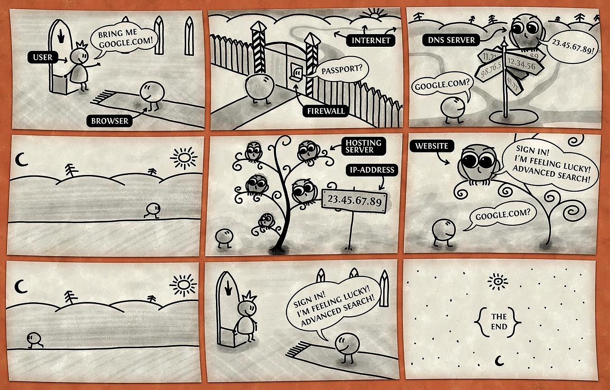

Internet
Como a Internet funciona
Subir
Browsers
Há uma grande diversidade de dispositivos que acessam a internet. Entre eles, há uma série de tablets, smartphones, pc's e etc. Cada um destes meios de acesso utilizam um determinado browser para navegar na web. Não há como os desenvolvedores manterem um bom nível de compatibilidade com todos estes browsers levando em consideração a particularidade de cada um. Uma maneira mais segura de manter o código compatível, é nivelar o desenvolvimento pelos motores de renderização. Cada browser utiliza um motor de renderização que é responsável pelo processamento do código da página.
Abaixo, segue uma lista dos principais browsers e seus motores:
| Motor | Browser |
| Webkit | Safari, Google Chrome |
| Gecko | Firefox, Mozilla, Camino |
| Trident | Internet Explorer 4 ao 9 |
| Presto | Opera 7 ao 10 |
Subir
Códigos e mais códigos
Na internet são utilizadas diversas linguagenss para mandarmos o computador fazer o que queremos. Elas podem ser divididas em duas categorias:
Server side
São as linguaguens que rodam no servidor, como PHP, Ruby, ASP, entre outras.
Client side
É o que roda no cliente, no browser no usuario. Sendo bem abrangente seria o HTML, CSS e JavaScript.